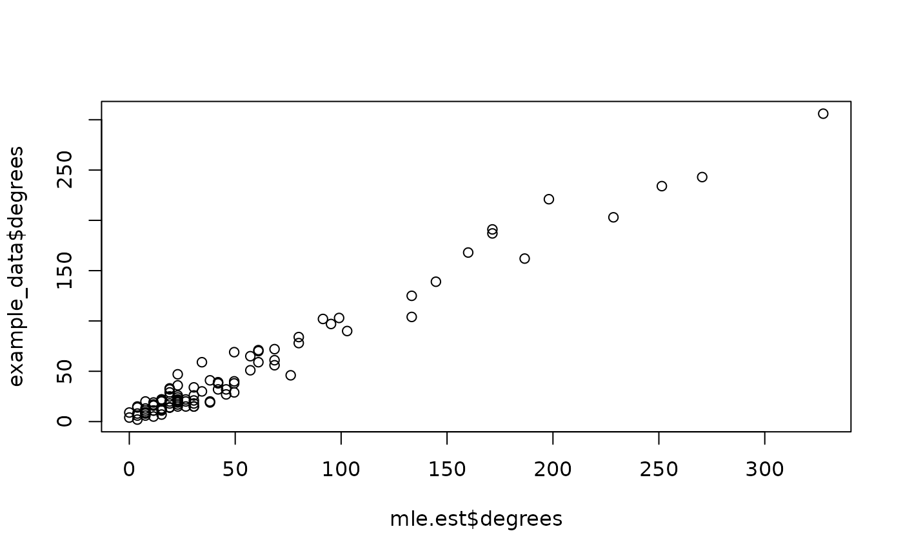

Fit Killworth models to ARD. This function estimates the degrees and population sizes using the plug-in MLE and MLE estimator.
Source:R/killworth.R
killworth.RdFit Killworth models to ARD. This function estimates the degrees and population sizes using the plug-in MLE and MLE estimator.
Arguments
- ard
The `n_i x n_k` matrix of non-negative ARD integer responses, where the `(i,k)th` element corresponds to the number of people that respondent `i` knows in subpopulation `k`.
- known_sizes
The known subpopulation sizes corresponding to a subset of the columns of
ard.- known_ind
The indices that correspond to the columns of
ardwith known_sizes. By default, the function assumes the firstn_knowncolumns, wheren_knowncorresponds to the number ofknown_sizes.- N
The known total population size.
- model
A character string corresponding to either the plug-in MLE (PIMLE) or the MLE (MLE). The function assumes MLE by default.
References
Killworth, P. D., Johnsen, E. C., McCarty, C., Shelley, G. A., and Bernard, H. R. (1998). A Social Network Approach to Estimating Seroprevalence in the United States, Social Networks, 20, 23–50
Killworth, P. D., McCarty, C., Bernard, H. R., Shelley, G. A., and Johnsen, E. C. (1998). Estimation of Seroprevalence, Rape and Homelessness in the United States Using a Social Network Approach, Evaluation Review, 22, 289–308
Laga, I., Bao, L., and Niu, X. (2021). Thirty Years of the Network Scale-up Method, Journal of the American Statistical Association, 116:535, 1548–1559
Examples
# Analyze an example ard data set using the killworth function
data(example_data)
ard <- example_data$ard
subpop_sizes <- example_data$subpop_sizes
N <- example_data$N
mle.est <- killworth(ard,
known_sizes = subpop_sizes[c(1, 2, 4)],
known_ind = c(1, 2, 4),
N = N, model = "MLE"
)
pimle.est <- killworth(ard,
known_sizes = subpop_sizes[c(1, 2, 4)],
known_ind = c(1, 2, 4),
N = N, model = "PIMLE"
)
#> Warning: Estimated a 0 degree for at least one respondent. Ignoring response for PIMLE
## Compare estimates with the truth
plot(mle.est$degrees, example_data$degrees)

data.frame(
true = subpop_sizes[c(3, 5)],
mle = mle.est$sizes,
pimle = pimle.est$sizes
)
#> true mle pimle
#> 1 36246 34976.60 31232.11
#> 2 20174 20042.77 20831.44